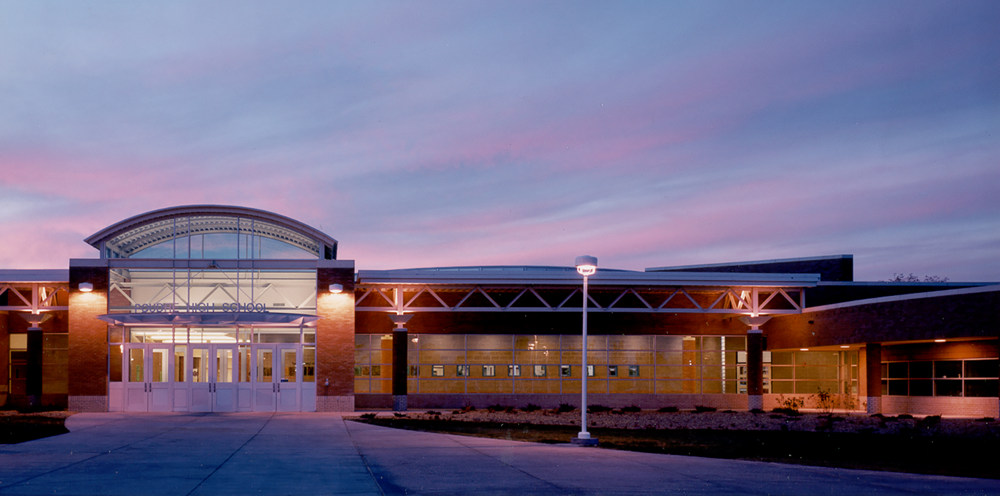
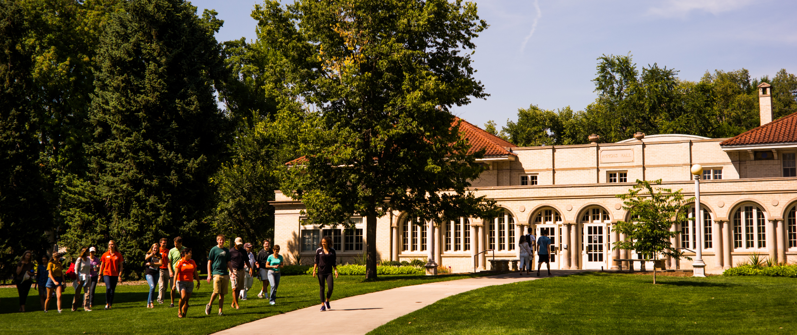

When I moved to Colorado, it was just as I was entering high school. Since my mom lived here before, she recommended Poudre High School (side note: she went there too!). It was a great learning environment, as was also close to home so it didn't take long to get there in the mornings and come back in the evenings. It paved the way for me being able to successfully apply at CSU and get into the presigious Engineering Program.

CSU was the perfect match for me! Like Poudre, it was also close to home so if there ever was an emergency (Like running out of clean clothes), I would be able to call up my parents and have them help me. For the first two years, I lived on campus in Aspen Hall at the Academic Village. It was a paradise in the middle of the hurricanes of torment my classes were inflicting on me. Unfotunately, the College of Engineering just wasn't what I was pasionate about, and I decided to switch over to Computer Science instead. I am so grateful I did so, because it has completely changed my life. I was finally in a major that I was passionate about, and this allowed me to comtinue my education. after those two years, I then moved into an apartment just off campus where I rode out the rest of the (bearable) storm that was the Computer Science major and graduated in Spring 2018.